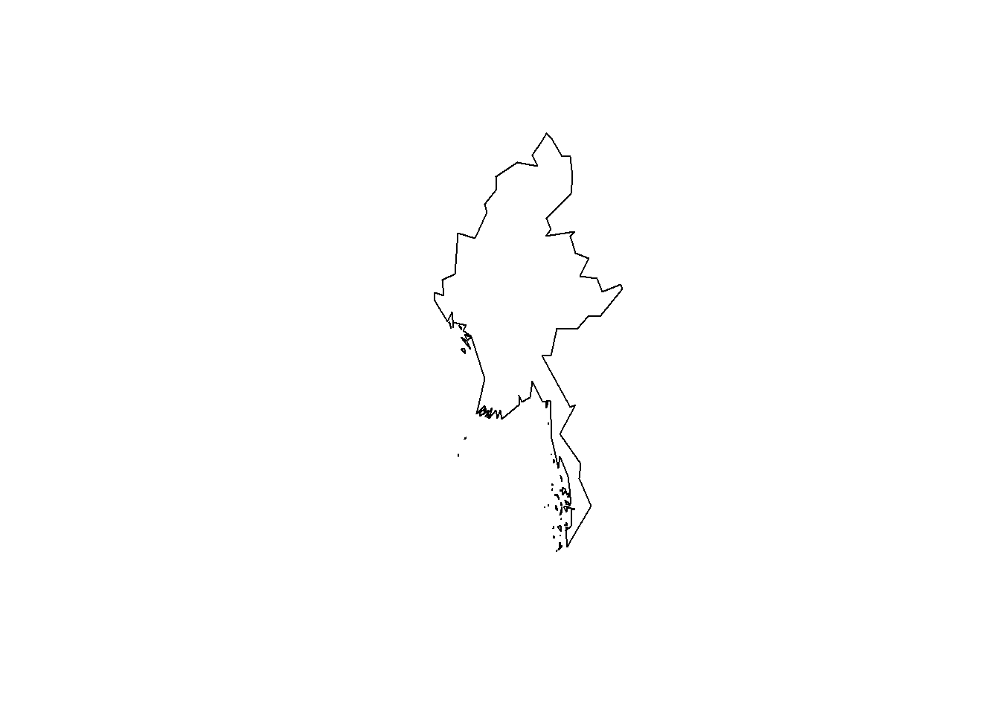

library(mapdata)
library(maptools)
library(sp)
library(raster)world2HiresMapEnv## [1] "R_MAPDATA_DATA_DIR"data(wrld_simpl)
myanmar <- wrld_simpl[wrld_simpl$NAME=="Burma",]
plot(myanmar)
myanmar_utm46 <- spTransform(myanmar, "+init=epsg:32646")
myanmar_utm47 <- spTransform(myanmar, "+init=epsg:32647")
plot(myanmar_utm47)MainFrame <- MainFrame[!is.na(MainFrame$EAST),]
plot_coords <- MainFrame %>% dplyr:: select(Plot_names, EAST, NORTH, District, Township,Year) %>% group_by(Plot_names) %>% summarise(EAST = mean(EAST), NORTH = mean(NORTH), Year= mean(Year), District = District[1], Township= Township[1]) write.csv(plot_coords, file = “Data/plot_coords.csv”)
coords = cbind(plot_coords\(EAST, plot_coords\)NORTH) sp_46 <- SpatialPoints(coords) sp_47 <- SpatialPoints(coords)
proj4string(sp_46) = CRS(“+init=epsg:32646”) proj4string(sp_47) = CRS(“+init=epsg:32647”)
par(mar=c(4,4,2,2), mfrow =c(2,2)) plot(sp_46, cex = 0.1, col = “blue”) plot(myanmar_utm46, add = TRUE, border = “red”) plot(sp_47, cex = 0.1, col = “green”) plot(myanmar_utm47, add = TRUE, border = “red”) hist(plot_coords\(EAST, breaks = 100); abline(v = 500000, col = "red"); abline(v = 1500000, col = "red") hist(plot_coords\)NORTH, breaks = 100); abline(v = 1500000, col = “red”)
plot_coords %>% filter(EAST > 500000 & EAST < 1500000) %>% filter(NORTH >1500000) %>% summarise(EAST_min = min(EAST), EAST_max = max(EAST), NORTH_min = min(NORTH), NORTH_max = max(NORTH) )
coords46 <- plot_coords %>% filter(EAST > 500000 & EAST < 1500000) %>% filter(NORTH >1500000)
coords47<-plot_coords %>% filter(EAST < 500000) %>% filter(NORTH >1500000)
coords46 <- plot_coords %>% filter(EAST > 500000 & EAST < 1500000) %>% filter(NORTH >1500000) %>% mutate(Zone = paste(“46”))
coords47<-plot_coords %>% filter(EAST < 500000) %>% filter(NORTH >1500000) %>% mutate(Zone = paste(“47”))
coords46 = SpatialPoints(cbind(coords46\(EAST, coords46\)NORTH)) proj4string(coords46) = CRS(“+init=epsg:32646”) coords46<-spTransform(coords46, “+init=epsg:4326”)
coords47 = SpatialPoints(cbind(coords47\(EAST, coords47\)NORTH)) proj4string(coords47) = CRS(“+init=epsg:32647”) coords47<-spTransform(coords47, “+init=epsg:4326”)
par(mar=c(4,4,2,2), mfrow =c(2,2)) plot(myanmar, border = “red”) plot(coords46, add = TRUE, cex = 0.1, col = “blue”) plot(coords47, add= TRUE, cex = 0.1, col = “green”)
Error_PlotA <- plot_coords %>% filter(EAST > 1500000 & NORTH < 500000)
Error_PlotB <- plot_coords %>% filter(EAST < 500000 & NORTH < 500000)
Error_Plot <- rbind(Error_PlotA, Error_PlotB)
Error_plots_B <- read.csv(“Data/Fixed_ErrorPlots.csv” )
data(wrld_simpl)
myanmar <- wrld_simpl[wrld_simpl$NAME==“Burma”,] plot(myanmar) myanmar_utm46 <- spTransform(myanmar, “+init=epsg:32646”) myanmar_utm47 <- spTransform(myanmar, “+init=epsg:32647”)
plot(myanmar_utm47) Error_plots_B <- Error_plots_B[!is.na(Error_plots_B$EAST),]
plot_coords_B <- Error_plots_B %>% dplyr:: select(Plot_names, EAST, NORTH, District, Township,Year) %>% group_by(Plot_names) %>% summarise(EAST = mean(EAST), NORTH = mean(NORTH), Year= mean(Year), District = District[1], Township= Township[1])
coords_B = cbind(Error_plots_B\(EAST, Error_plots_B\)NORTH)
sp_46_B <- SpatialPoints(coords_B) sp_47_B <- SpatialPoints(coords_B)
proj4string(sp_46_B) = CRS(“+init=epsg:32646”) proj4string(sp_47_B) = CRS(“+init=epsg:32647”)
par(mar=c(4,4,2,2), mfrow =c(2,2)) plot(sp_46_B, cex = 0.1, col = “blue”) plot(myanmar_utm46, add = TRUE, border = “red”) plot(sp_47_B, cex = 0.1, col = “green”) plot(myanmar_utm47, add = TRUE, border = “red”) hist(plot_coords_B\(EAST, breaks = 100); abline(v = 600000, col = "red"); abline(v = 1500000, col = "red") hist(plot_coords_B\)NORTH, breaks = 100); abline(v = 600000, col = “red”)
coords46_B <- Error_plots_B %>% filter(EAST > 600000) %>% mutate(Zone = paste(“46”))
coords47_B <- Error_plots_B %>% filter(EAST < 600000) %>% mutate(Zone = paste(“47”))
Fixed_Plots <- rbind(coords46_B, coords47_B)
Mainframe_Plots <- rbind(coords46, coords47) %>% rbind (Fixed_Plots) Plots_46_M <- Mainframe_Plots %>% filter(Zone == 46) Plots_47_M <- Mainframe_Plots %>% filter(Zone == 47)
coords46_M = SpatialPoints(cbind(Plots_46_M\(EAST, Plots_46_M\)NORTH)) proj4string(coords46_M) = CRS(“+init=epsg:32646”) coords46_M <-spTransform(coords46, “+init=epsg:4326”)
coords47_M= SpatialPoints(cbind(Plots_47_M\(EAST, Plots_47_M\)NORTH)) proj4string(coords47_M) = CRS(“+init=epsg:32647”) coords47_M<- spTransform(coords47, “+init=epsg:4326”)
par(mar=c(4,4,2,2), mfrow =c(2,2)) plot(myanmar, border = “red”) plot(coords46_M, add = TRUE, cex = 0.1, col = “blue”) plot(coords47_M, add= TRUE, cex = 0.1, col = “green”)
Mainframe_Plots <- Mainframe_Plots %>% dplyr::select(-c(Year,District,Township)) Main_DataFrame <- merge(x = MainFrame_Tree, y = Mainframe_Plots, by = “Plot_names”, all.x = TRUE)
write.csv(Main_DataFrame, file = “Data_Output/Main_DataFrame.csv”, row.names = F)